Learning Goals
At the end of this Tutorial, you will be able to:
- Create layouts with CSS flexbox that display as two, three or four columns on desktop/laptop screens and as two columns or a single column on mobiles.
- Add gutters between columns.
- Add background colours.
- Display square images as circles.
Introduction
This three-page website for a fictitious travel agency showcases responsive multi-column layouts created with CSS flexbox.
You can display a finished version of this project by clicking the image below.

Portfolio project folders and files
Your first step is to download the files you need for this project.
- Download the following compressed file to your computer: travel.zip
- If a sub-folder named portfolio does not already exist inside your websites folder, create it now.

- Uncompress the ZIP file into your websites/portfolio sub-folder as shown below.

This will create a sub-folder named travel inside your portfolio folder.
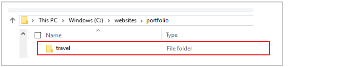The folders, sub-folders and files for this ‘Travel’ project will be as shown below.

Working with your project files
Now you can begin to work with the files you have downloaded.
- In Visual Studio Code, open the following downloaded files. The first three are web pages; the fourth is a stylesheet file:
- index.html, destinations.html and about-us.html: You will find these in your main travel folder.
- style.css: You will find this in the assets/css/ sub-folder of the travel folder.

You may wish to close any other files you may have open in VS Code.
The structure of your project web pages
Display the three project web pages in your web browser. They should look as shown below.
Note that all three web pages have a light grey background.
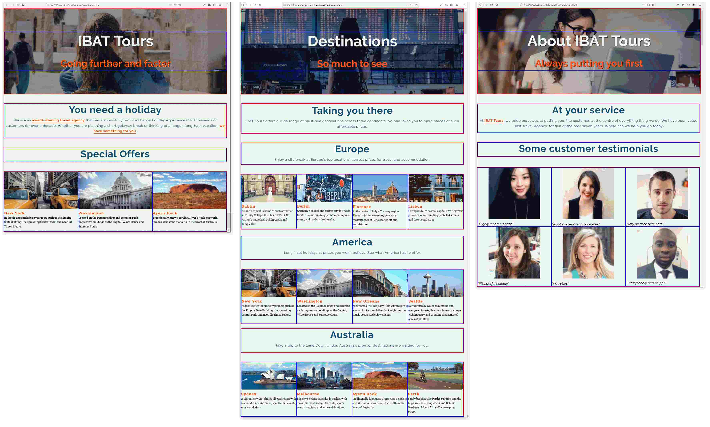Visual layout guides
To help you distinguish between the various parent and child elements, the following two styles are added at the bottom of the style.css stylesheet.
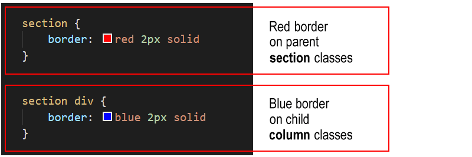Before and after each parent container is a set of three ‘blank’ or ‘spacer’ paragraphs. These are to help you see where one parent container ends and the next container starts.

As with the coloured borders, you can remove these blank paragraphs at the end of the project.
Sub-dividing the web page with the <section> tag
As you can see, each of the three web pages is sub-divided into ‘blocks’ of content.

You could use the <div> ... </div> for this purpose.
But a better, more modern HTML5 way is to use another tag pair with the same effect: <section> ... </section>.
Hero blocks and the <header> tag
Each web page begins with a hero section that is styled with the <header> ... </header> tag pair.
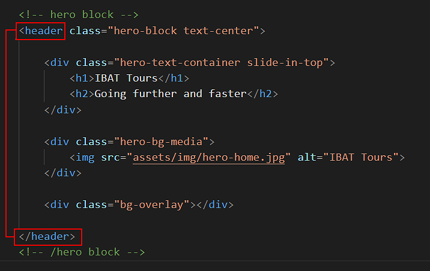This is similar to the <div> ... </div> tag pair, but is the preferred HTML5 way of identifying the first, introductory content block of a webpage.
Section blocks and class names
Under the ‘hero’ section (styled with the container-hero-block class), the basic structure of the three web pages is as follows.

 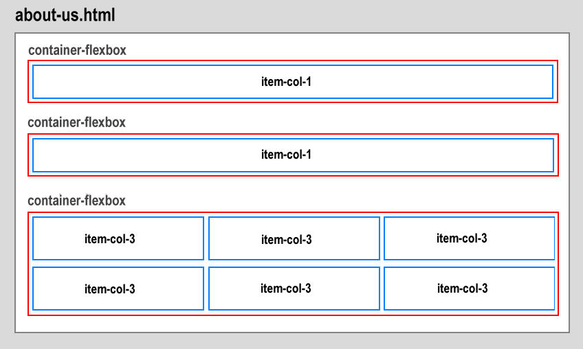
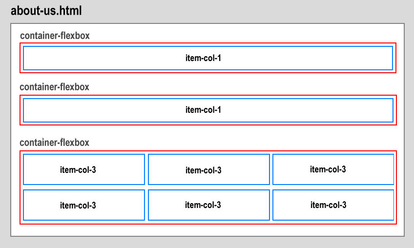
- All content is contained inside a series of parent containers with a class of flexbox-container.
- On all three web pages, some content stretches the full width of both desktop/laptop and mobile screens. This full-width content is within a child column named item-col-1.
- On the index.html and about-us.html pages, the parent containers have child columns (item-col-3) that display as three columns on desktop/laptop screens and as one or two columns on mobiles.
- On the destinations.html page, the parent containers have child columns that display as four columns on desktop/laptop screens and as two columns (item-col-4-2) on mobiles.
Adding padding to the sections
Follow these steps to add spacing around the four inside edges (top, right, bottom and left) of the parent flexbox containers.
- In the style.css file, at around line 80, you can see two .container-flexbox selectors have been created. The first is inside a media query for desktops and laptops. The second is inside a media query for mobile screens.
- Add the padding values below for the two .container-flexbox selectors.

- Save your style.css file.
In your web browser, view the web page on desktop/laptop and mobile size screens. It should look as shown below.
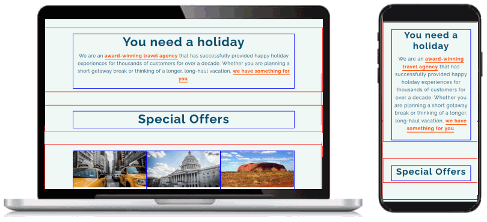Adding a background colour to the sections
In the style.css file, you can see a class named .bg-orange has been created to apply an orange background colour. It takes effect only when combined with the container-flexbox class.

Let’s apply this bg-orange class to some of the parent flexbox containers in your web pages.
- In the index.html web page, add the class name of bg-orange to the parent container that has inside it a item-col-1 child column with the text “Special Offers“.
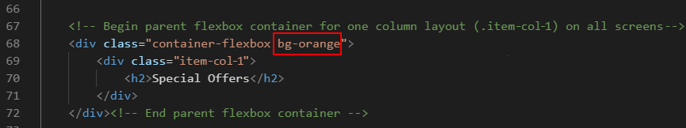
Also, add the bg-orange class to the parent container with the three item-col-3 child items.

- Save the index.html web page. On desktop/laptop and mobile screens, it should look as shown below. 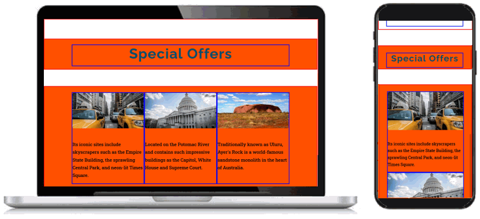
- Switch to the destinations.html web page.
Add the class name of bg-orange to the two parent containers with the .item-col-1 child column. The first container contains the text “Europe” and the second, “Australia.“
 Also, add the bg-orange class name to the two parent containers with the child items of .item-col-4-2 for the locations of “Europe” and “Australia“.
Also, add the bg-orange class name to the two parent containers with the child items of .item-col-4-2 for the locations of “Europe” and “Australia“.

- Save the destinations.html file. On desktop/laptop and mobile screens, it should look as shown below. 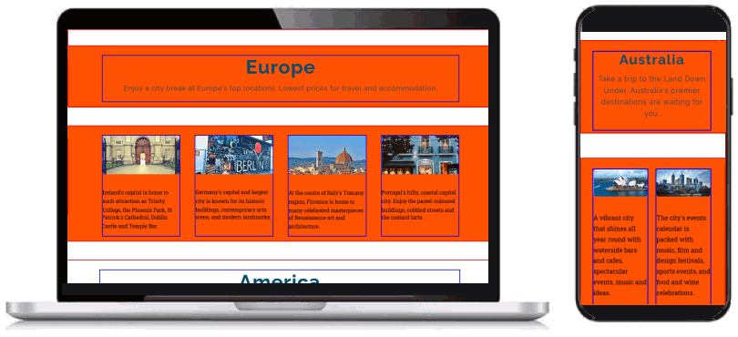
- For those parent containers with an orange background, the headings and paragraph text is difficult to read.
Add the following new selectors and style rules to your stylesheet to change the text to white where the background is orange.

- Save the style.css stylesheet.
On desktop/laptop and mobile screens, your web pages should now look as shown below.

You have now finished working with the container-flexbox parent containers. All your remaining updates will be to the child columns inside the parent containers.
Styling the single-column layouts
On both desktop/laptop and mobile screens, parent containers with an item-col-1 child will always display as a single column. Let's add some padding to these child items.
- In your style.css stylesheet, add the following padding values for the .item-col-1 selector within all parent containers.

- Save the style.css file, and, in your web browser, view the effect on your web page. 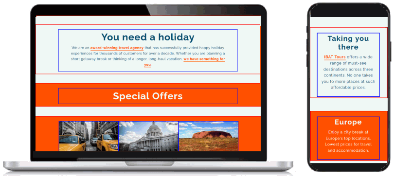
Styling the three-column layouts
On desktop/laptop screens, the three-column layout has no gutter spacing between the child columns. Let’s change this.
- In the style.css stylesheet, within the desktop/laptop media query for the .item-col-3 selector, reduce the width from 33.33% to 30% as shown below.
 The remaining space of 10% will be added as a gutter between the child columns.
This applies only to desktop/laptop screens (768px or wider) and has no effect on mobile screens (767px or narrower).
The remaining space of 10% will be added as a gutter between the child columns.
This applies only to desktop/laptop screens (768px or wider) and has no effect on mobile screens (767px or narrower). - Add some vertical spacing under the .item-col-3 columns as follows.

- Save the style.css file, and, in your web browser, view the effect on your web page.

Styling the four-column layouts
In the destinations.html web page, three of the parent containers have child columns that display as four columns on desktops/laptops and as two columns on mobiles.
These child columns have a class of .item-col-4-2. At the moment, the .item-col-4-2 class has no gutter spacing between the child items. Let’s change this.
- In the style.css stylesheet, within the desktop/laptop media query for the .item-col-4-2 selector, reduce the width from 25% to 22% as shown below.
And within the mobile media query for the .item-col-4-2 selector, reduce the width from 50% to 47%.
Also, add the following vertical spacing under the child columns.

- Save the style.css file, and, in your web browser, view the effect on your web page.

Styling the customer testimonials section
On the about-us.html web page is a section named “Some customer testimonials”. The parent flexbox containers have a special class named happy-users. Let’s update the related style rules.
- In the style.css stylesheet, add a new CSS selector named .container-flexbox.happy-users .item-col-3. Add style rules to center-align the content (text and images) within the .item-col-3 child items that have, as their parent, a container with the classes of container-flexbox and happy-users. 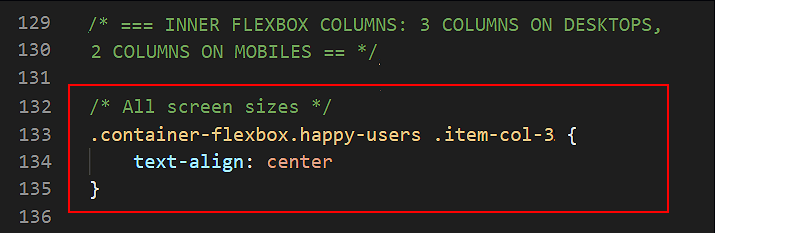
- Within the desktop/laptop media query, add some gutter spacing between the .item-col-3 child columns and some vertical spacing under them.

- Within the mobile media query, also add some gutter spacing between the .item-col-3 child columns and some vertical spacing under them. 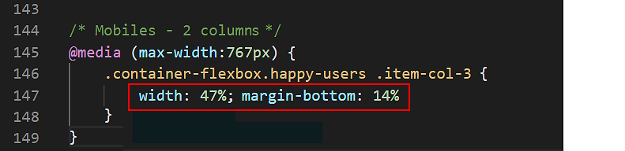
- Lastly, add the following style properties and values for the images within the .item-col-3 child columns. 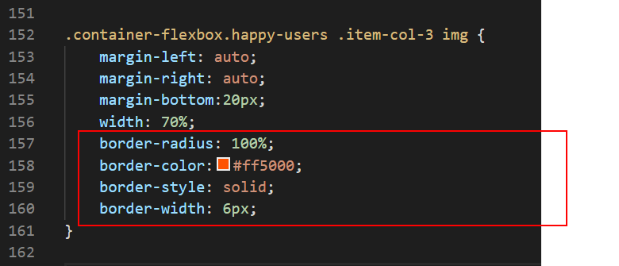 These style rules will display the images as circles, and add a coloured border around them.
- Save the style.css file, and, in your web browser, view the effect on your web page.

Removing the visual layout guides
You can now delete the visual layout guides from your web pages and stylesheet.
- Within your web pages, delete the sets of three blank paragraphs before and after the parent flexbox containers.

- At the bottom of your style.css file, delete the styles for coloured borders around the parent containers and child columns.

- When finished, save your index.html, destinations.html, about-us.html and style.css files.
Click here to view a finished version of the travel agency website.
Uploading your files to GitHub
After finishing your web page and stylesheet, you are now ready to upload them to your account on GitHub.
- Open a new tab in your web browser and go to GitHub.com. If you are not already signed in to your GitHub account, sign in now.

- On your GitHub home page, click the ‘repo’ that holds your web pages. Its name will look as follows, where username is your chosen username on GitHub.
username.github.io

- On the next GitHub screen displayed, near the right of the screen, you can see a button named Add file. Click on it.

- From the dropdown list displayed, choose the option Upload files.

- In File Explorer (Windows 10) or Finder (Apple Mac), drag-and-drop your entire 📁 portfolio sub-folder to upload it to your repository on GitHub.

- Scroll down to the bottom of the GitHub screen, and accept or edit the short message (Add files via upload) in the Commit changes box.
- Finally, click the green Commit changes button to upload your files.

Your portfolio project web page is now published on GitHub at a web address similar to the following:
https://username.github.io/portfolio/smoothies/index.html
or simply:
https://username.github.io/portfolio/smoothies
It may take a few minutes for your uploaded files to appear on GitHub.